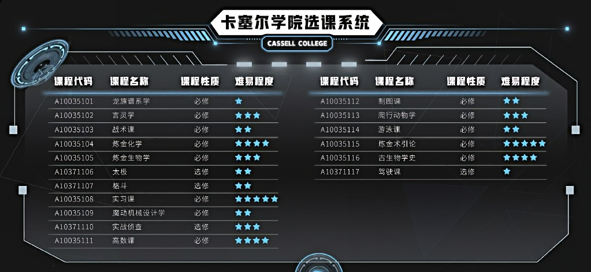

卡塞尔学院 CASSELL
|
卡塞尔学院 CASSELL
|
 |
|
 |
|
 |
|


卡 塞 尔 学 院
C A S S E L L C O L L E G E
学 院 介 绍
学院校训
凡 王 之 血 必 以 剑 终
学院背景
卡塞尔学院是一所位于美国伊利诺伊州芝加哥远郊的私立大学，和芝加哥大学是联谊学校，每年都在密歇根湖联合举办马术、赛艇、热气球、游泳等校际比赛活动，此外还有更加广泛的学术交流，主要研究方向是古代爬行类动物。卡塞尔学院的前身是秘党，在引入现代化教育机制成立为学院后以德国著名屠龙世家“卡塞尔”的姓氏命名，主要功能是培养优秀的混血种人才、收集研究关于龙族的一切信息、研制新型的杀伤性武器，以及尽一切力量屠龙
学院经历
创办初期
卡塞尔学院的前身是由混血种中的秘党组织创建，校名来自殒落的著名屠龙家族卡塞尔家族。卡塞尔学院的前身秘党，宗旨是灭杀一切纯血龙族，是混血种中坚决与龙族敌对的一派，由卡塞尔学院全体师生和七个欧洲混血种家族组成。因为历史上的屠龙家族巨大且多数都已经消亡，而在新的时期，学院组织没法依赖家族传承了，而必须引入现代的教育机制，在梅涅克·卡塞尔牺牲之后的一年内建立
格陵兰任务
2001年秋末，卡塞尔学院在格陵兰海检测到龙类胚胎的心跳信号，执行“SS”级任务“格陵兰计划”，执行部负责人冯·施耐德的六个学生下潜时进入尼伯龙根·阿瓦隆岛发现一扇门，后来胚胎突然孵化，而施耐德也因下潜救援时遭高阶巨龙袭击，导致下半面部彻底萎缩，学生们葬身冰海，造成“格陵兰阴影事件
夔门计划
路明非入校的同年，卡塞尔学院派遣由曼斯·龙德施泰特带领的专员酒德亚纪、叶胜和塞尔玛执行“夔门计划”。后因为遇到困难，学院开启了紧急状态，召集全部A级血统以上的学员尝试破译青铜城的龙文，以解救被困的专员。最后虽由“S”级学员路明非成功破译，但由于青铜城结构的千变万化使得酒德亚纪和叶胜最终未能成功逃脱。最后不幸全队覆没
青铜计划
后开启“青铜计划”，派遣路明非等学员执行此次任务，承载“摩尼亚赫号”前往位于中国的三峡水下与四大君主之一的青铜与火之王——诺顿进行对抗，最后成功将其击杀
尼伯龙根计划
是由加图索家提出的，为强化血统，突破混血种的极限，同时也为了清除混血种中的可疑血统，如超过了“临界血限”的混血种。参与这项计划，意味着获得力量，也意味着巨大的牺牲。由于尼伯龙根计划由加图索家提出，因此弗罗斯特·加图索也主张让恺撒·加图索也成为了该计划的候选人之一
北京任务
因为学院出动的b007号专员雷蒙德，在北京火车南站因大地与山之王耶梦加得的破坏地震而遇难，而启动了“SS”级任务为调查和夺回丢失的重要资料，校董会复信调整委派‘S’级路明非为这次任务的专员，‘A’级楚子航为他提供协助；后由楚子航单独一人成功夺得资料。由猎人网站传来了令人震惊的消息——大地与山之龙王在北京苏醒，使得全世界的混血精英纷纷飞往北京。卡塞尔学院也派遣了学生会和狮心会的部分成员前往北京寻找龙类的痕迹。最后由路明非重创、楚子航的四度爆血后，成功将大地与山之王双生子一举击杀
龙渊计划
卡塞尔学院在聆听到海沟深处的古龙胚胎心跳后，安排路明非、恺撒、楚子航三人结成“王牌组合”前往东京摧毁日本海中的龙类胚胎的特别任务，但因关键时刻日本分部的叛变，使得三人组暂时流落到牛郎店的高天原。源稚女与卡塞尔合作，欲与源稚生和解，而白王在此时苏醒，东京面临毁灭危机。副校长守夜人带领卡塞尔学院装备部空降东京，全面介入危机。在路明非于东京击杀白王后，成为了卡塞尔学院的学生会新晋主席，并接受了尼伯龙根计划。后卡塞尔学院了解到路明非与奥丁的战斗过程，并将战斗过程中完全龙化的路明非定性为高危混血种，全力追捕路明非
学院结构
部门机构
校董会
卡塞尔学院的最高权力机构，秘党的现代组织机构，由出资的秘党家族出任校董，共七位校董组成。其中包括加图索家家长庞贝·加图索、洛朗家族族长伊丽莎白·洛朗、校长昂热以及“嗜龙血者”贝奥武夫等。校董会有权投票决定学院的所有问题，包括但不限于决定对违纪学生的处分、决定校长的人选、决定是否批准学生的结婚申请、决定屠龙行动计划以及处决任何人
秘党元老会
地位还要在校董会之上，是隐藏在幕后的神秘组织，为老家族的代表组成，实际掌握的权力要少于校董
执行部
执行部被称为是一群暴力狂，准军事机构，会向世界各地派遣专员执行任务，在卡塞尔学院总有点居高临下。前身是秘党“行动队”。任务等级分为SS、S、A、B、C、D，除了特殊的“SS”任务之外，其他任务的难度等级都是以此排名，以作分类。执行部专员包括雷蒙德、叶胜、酒德亚纪、高幂、万博倩等
执行部分部
学院在世界各地设置了外派机构——“分部”，用于驻扎执行部专员。学院在不同地区驻扎的分部风格各不相同
炼金原理部
负责有关炼金化学的理论研究
装备部
全称“炼金术与科学工程应用研究所”，别名“瓦特阿尔海姆研究所”。不搞理论研究，工作是把科学与炼金术原理转化为实际应用，为学院提供武器，装备，研究新设备，被昂热称为“炸弹狂人集中营”
信息部
信息部专管学生档案
校工部
校工部的人均为前海豹突击队队员和混血种，但普遍血统纯度不高
心理部
学院的心理部
风纪委员会
管理学院风纪和财务
建筑结构
英灵殿
英灵殿是一座拜占庭风格的古老建筑，坐落在奥丁广场的中央，外面装饰着布满暗红色花纹的花岗岩，完整的世界树图案被雕刻在整个外壁上，顶部矗立着一只雄鸡，底层则镇压着一切龙族的祖先，黑龙尼德霍格。两侧墙壁上挂满了历代屠龙战争中为人类建立功勋的英雄头像
冰窖
卡塞尔学院的仓库，因始终保持低温而得名。只有失控的危险物品才有资格在冰窖占据一席之地，比如龙鳞、录有“皇帝”言灵的八音盒、炼金设备、龙骨十字等，越往下层藏品级别越高
湮没之井
卡塞尔学院仓库“冰窖”的最底层，是一个被几千万年的流水侵蚀出来的地下岩洞，也是湮没一切的地方。这里保存着最顶级的藏品，也是最容易失控的危险物品，比如龙骨十字。强大至极的炼金领域填充着这个空间，“领域”由炼金矩阵产生，释放出类似“言灵·戒律”般的效果，强行镇压着藏品们
教堂
教堂是通往三女神层和守夜人所在的钟楼的核心枢纽
诺顿馆
诺顿馆是一处免费的场地，赢得“自由一日”的社团可以在其中驻扎一年的时间
安珀馆
安珀馆是一座有着哥特式尖顶的别墅建筑，是一处付费的场地，可以为社团提供活动场所
图书馆
卡塞尔学院的图书馆是一栋庄重的仿古建筑，大理石立柱支撑着优雅的拱券，顶部是可以看见星空的拼花玻璃窗，厚重的书架把巨大的空间分隔开。图书馆的地下室安置着体积巨大的中央主机，从地下一层直到地下六层
体育馆
内有游泳池等设施
校长办公室
一栋别致的建筑物，整个就是个书架，共有两层，屋顶中央有一扇巨大的天窗，四壁都是书架
地下层建筑
卡塞尔学院地下层建筑由三大区域构成，名字分别是兀尔德、贝露丹迪和诗蔻迪，分别对应着地面上的核心区域：金宫、英灵殿和梵格尔夫楼
学院成员
校长 希尔伯特·让·昂热
初代狮心会成员，以自身血统和能力当上了校长。负责管理学院、组织屠龙。有权分配龙骨
副校长 尼古拉斯·弗拉梅尔
守夜人，辅助昂热执掌卡塞尔学院的老人，在学院内开启了言灵戒律，只有特殊情况才会暂时解除
学院主机 诺玛·劳恩斯/Eva
卡塞尔学院中的超强电脑系统，是一台具有“人格”的超级计算机。负责在学院侦查，如有情况会开启警报。EVA和诺玛都是同一智能中枢的性格变体，神经元组合方式不同，但其记忆库和信息库相同
教授 冯·施耐德
执行部部长，负责派遣和组织专员执行任务
教授 格尔德·鲁道夫·曼施坦因
主管学院风纪和财务
教授 古德里安
龙族谱系学相关教授，教学委员会主席，负责教授龙类历史
教授 曼斯·龙德施泰特
负责教授魔动机械设计学
教授 富山雅史
卡塞尔学院心理部教员
院系主任 道格·琼斯
物理系主任，终身教授
院系主任 让·格鲁斯
精密机械系主任，终身教授
院系主任 布莱尔·比特纳
数学系主任，终身教授，号称“数学界所罗门王”
优秀学生 路明非
路明非有着不折不扣的“废柴”个性，爱吐槽，时不时会蹦出一句烂话，平时做事衰到极点，因龙血产生的“血之哀”无法融入群体，在生活中常常感到敏感、孤独、不自信。十八岁前是一名再平凡不过的少年，寄宿在叔叔婶婶家里，经常被忽视。最擅长的是打游戏，理想小到只是看报摊。在十八岁时，却因血统被评定为“S”级而收到卡塞尔学院的邀请，从此来到了龙的国度，开启了新世界的大门
优秀学生 楚子航
学习成绩优异。实力与学生会前任主席恺撒·加图索实力不分高下。拥有着高危言灵·君焰，血统在习得禁术“爆血”后得到提升到超A级，却也因副作用而离死不远，在经过耶梦加得的龙血洗礼后稳定了血统
优秀学生 恺撒·加图索
恺撒·加图索性格狂傲不羁，难以管束，视楚子航为其唯一的对手。是陈墨瞳的未婚夫，路明非的前任老大，高天原牛郎三人组成员之一
优秀学生 芬格尔·冯·弗林斯
芬格尔·冯·弗林斯，初入卡塞尔学院时血统被评级为A级，但因某些原因使他留级多年，血统评级也降至F，后降至G，被视作为卡塞尔学院的第一废柴，血统本身是很优秀的，只是不太争气。数学上很有天赋，是计算机超级天才，但学问完全没有用在正道上，是学院内部排前几名的黑客
学院文化
学院徽章
卡塞尔学院的校徽“半朽的世界树”，是一株半枯半荣的巨树，一半极其繁茂，一半彻底枯萎，象征着毁灭与新生
学院规则
“3E”考试
英文全称“Extraction Evaluation Exam”，是卡塞尔学院的龙族血统评定考试，如果通不过考试就不能被录取。通常都在新生入学后的一周内进行考核
自由一日
“自由一日”是一年一度学生们狂欢的节日，时间大约在新学年的开始。在这一天，大多数的学生纪律都可以不被遵守，学生们可以自由自在的做想做的事情。自由一日中最大的活动便是狮心会与学生会的战争，战争双方动用除了实弹外的一切武器（包括小型战术核弹），只为最后分出胜负，最后的胜出者将会获得学院内高级会馆诺顿馆一年的使用权、年度“学院之星”决赛权、以及在学院内追求的第一个女生不得拒绝并至少维持三个月关系的权利
契约
学生入学前需要签订秘党核心契约——炼金古卷《亚伯拉罕血统契》（Abraham Indenture，缩写为AI），入学即意味着加入秘党，毕业后驻扎世界各地的学院执行部分部。如果中途选择退学，就会先被洗脑，而后送回国
任务
卡塞尔学院的任务，和血统一样分不同等级。优先级从高到低，分别是ABCDEF级，而超越等级之上的特殊任务则定为“S”级。“S”级任务很少出现，例如在三峡水库对龙王诺顿的作战“青铜计划”就是“S”级。而“SS”级别则是例外中的例外，未必比“S”级任务更加重要，但是会极其特殊，此类任务由校董会直接下达，不通过校长昂热
通缉令
卡塞尔学院的通缉令分S、A、B三个级别，级别越高，投入的算力就越高。高级通缉令通常适用于高危目标，也会授权追捕者使用相应的暴力。如果通缉令外泄，还会引起赏金猎人的参与，即便他们不能拿着他的人头来学院领取奖金，也会觊觎他的骨头
日常
“日常”是卡塞尔学院的校规。寒暑假期间，学生每天都要在线报告。教授们会给日常打分，好的报告会提升绩点，谎报则等于考试作弊
学院配置
课程

学院课程主要包括《魔动机械设计学》《炼金化学》《言灵学》《太极》《实习课》《古诺尔斯语》《龙族谱系学》《爬行动物学》等，主要院系有航空航天工程学部、炼金系、机械系、格斗系、龙族历史系、新闻系、信息系、数学系、物理系等。而所有课程设立的最终目的都是为了屠龙
校服
卡塞尔学院的校服，包括一件白色的衬衣、滚着银色细边的墨绿色校服和一个深玫瑰红色的领结。校服胸口处的口袋上绣着卡塞尔学院的校徽
守夜人讨论区
守夜人讨论区是卡塞尔学院的网上社区，大多数学生和教师都会关注这个讨论区，学生们可以在讨论区里讨论时事，也可以发布消息和悬赏，甚至可以发起博彩。芬格尔是讨论区的管理员，而正如讨论区的名字，副校长守夜人是讨论区的吧主
特别快车
学生返校时一般在芝加哥火车站乘坐CC1000次地铁专线快车或直接乘坐直升机抵达
学院驻地
卡塞尔学院坐落于美国伊利诺伊州五大湖区，芝加哥远郊的一座半山腰上，依山靠湖，山下是地铁站和山谷校园，靶场和赛艇基地都位于此处
友好关系
芝加哥大学
卡塞尔学院和芝加哥大学是联谊学校，常联合举办一些比赛活动
蛇岐八家
二战结束后，希尔伯特·让·昂热前往东京和蛇岐八家会晤，在盟约的基础上补签了教育协议，实则正式合作的约定书。根据教育协议，蛇岐八家会选送优秀的后裔来美国进修，这些日裔学员回国后组成卡塞尔学院日本分部。教育协议的签署意味着蛇岐八家正式从属于秘党，但拥有很大的自治权。赫尔佐格事件结束之后，蛇岐八家和卡塞尔学院达成了新的联盟，最高决策权回到了校长昂热的手中，但是蛇岐八家依然享有非常大的自主权，在秘党的体系里，日本算是自治的区域